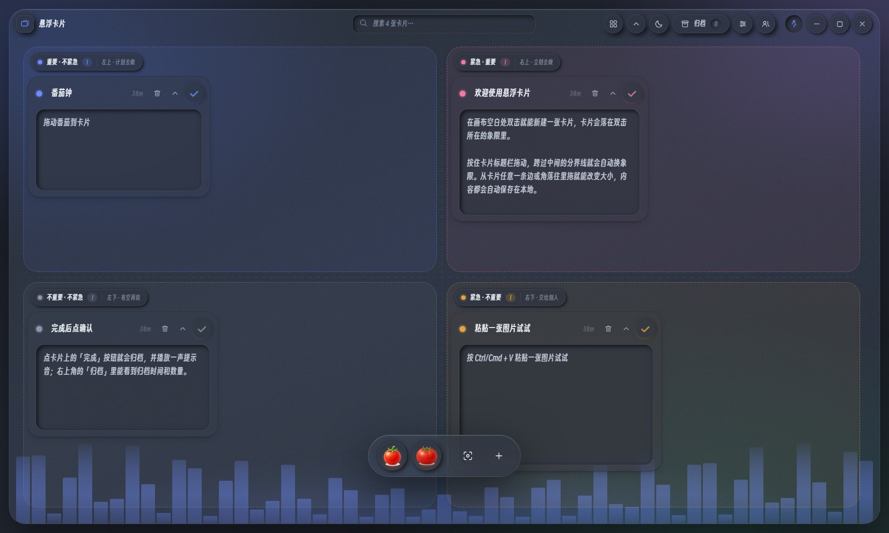
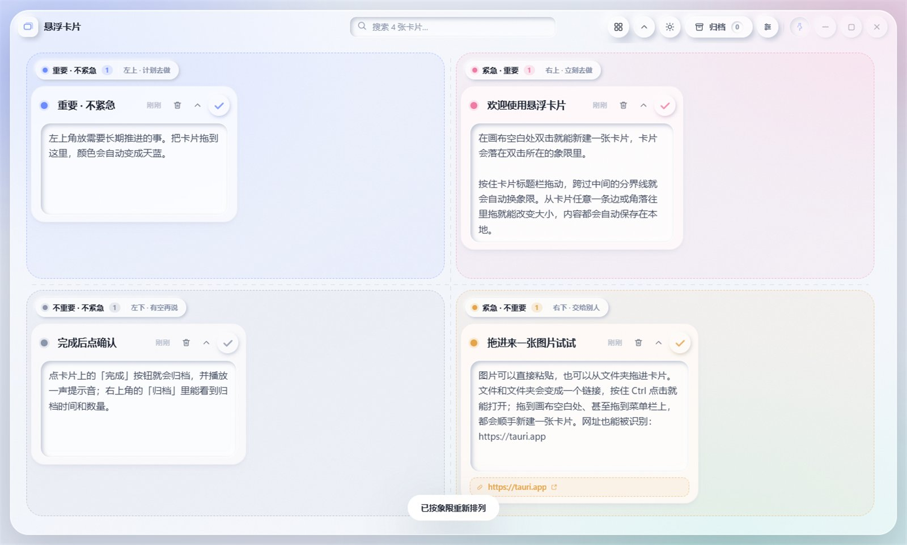
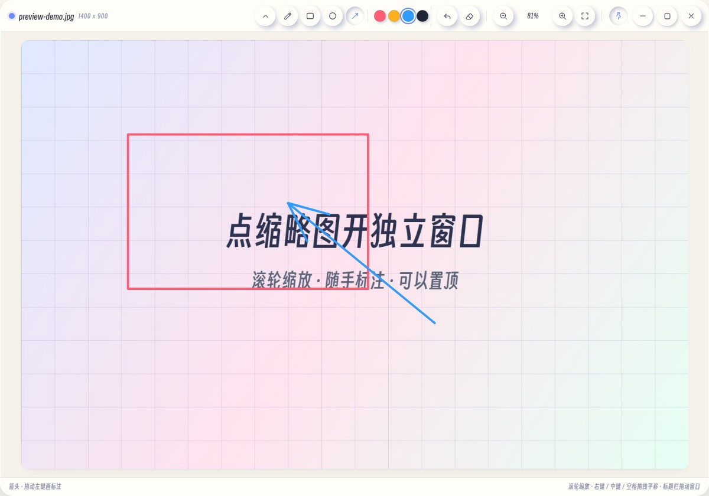

四象限画布
卡片跨过分界线就自动换象限、渐变强调色。四周都能拉伸，边缘就是缩放手柄。
最新版本 —
磨砂玻璃背景 + 新拟态控件，用「紧急 / 重要」四象限把事情摆开。 原生 Windows / macOS / Linux 悬浮窗，同一套界面也能跑在浏览器里。

卡片跨过分界线就自动换象限、渐变强调色。四周都能拉伸，边缘就是缩放手柄。
「整理」按从上往下、从左往右找每格第一个放得下的位置：删卡留下的空当会被补上，同一行能并排就并排。
完成即归档，带归档时间与数量。粘贴截图、拖入图片 / 文件 / 文件夹，网址自动认成链接。
点缩略图开一个自己的窗口：铅笔 / 矩形 / 圆形 / 箭头临时标注，滚轮缩放、右键拖拽、可置顶。
抓系统播放通道（WASAPI 回环），在面板背景铺一层跟着音乐跳动的频谱。音频不出进程、不落盘。
nemu 直接读写卡片，界面和命令行共用一份状态文件，写完 1~2 秒画面就更新。还附了一份 skill。


最新版本
—
还没有可下载的版本。发行包由 GitHub Actions 在打标签时自动构建； 你也可以在 Actions 里看构建进度， 或者按下面的步骤自己编一个。
每次打标签都会在 CI 上并行构建 Windows（NSIS + MSI）、macOS（Apple Silicon / Intel 两个 dmg）、 Linux（AppImage + deb），全部传成同一个版本的附件。
git clone https://github.com/bobbyz1x2c3/floatingPanel.git
cd floatingPanel
npm install
npm run desktop:build # 打包当前平台的安装包
npm run cli:build # 顺带编一个 nemu 命令行需要 Node.js 20+ 与 Rust 1.77+；Windows 上还要有 WebView2（Win11 自带）。 打包脚本会自动下载 WiX / NSIS。
nemu list # 看板子上有什么
nemu add --title "写周报" --quadrant schedule
nemu search 周报
nemu done '#2' # 完成并归档
nemu board --json # 给机器读
选择器支持完整 id、id 前缀和 #序号；所有命令都能加 --json。
状态文件在 %APPDATA%\app.nemufloat.desktop\board.json（桌面端），
界面每 1.2 秒比一次修改时间，所以命令行写完窗口里马上就有。
仓库里带了一份给 agent 用的 skill，把命令、象限含义和常用流程写成一页说明。
放进 ~/.codex/skills/ 之后，你跟 agent 说「把这几件事记到悬浮卡片上」，
它就知道该调 nemu。
npm run cli:build
nemu path # 状态文件在哪